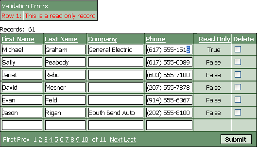

Locking Individual Records
If you want to prevent users from editing selected records in a table, you could tag them with a field that marks them as read-only. The following grid component shows a version of the Alphasports customer table. When you attempt to edit a record that contains "True" in the Read Only column, you will get an error message.

This grid has a calculated field named ro. It is defined as follows.
ro = customer->readonly |
You see the ro field formatted as a label in the grid above. It is only there to inform the user when he is allowed or not allowed to edit a record. The readonly field is also on the grid. It contains the record locking and has the control type "Hidden". The readonly field must be on the grid as an editable control type in order for the CanUpdateRecord event to refer to its value.
When a user attempts to edit a record that has a Readonly field with a "True" value, the following grid event cancels the submit. Note that, like all variables on a web page, the Readonly field returns a character value.
function CanUpdateRecord as v (DataSubmitted as P, Args as p, PageVariables as p, Result as p ) with PageVariables
if DataSubmitted.READONLY = "TRUE" then
Result.Cancel = .t.
Result.ErrorHTML = "This is a read only record"
end if end with end function |
See Also